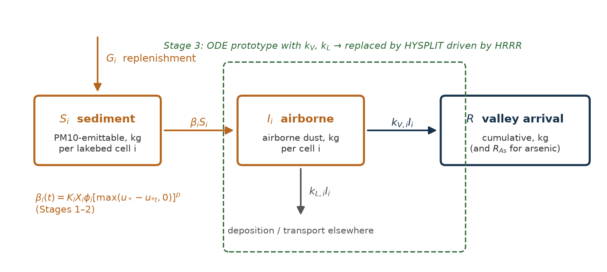
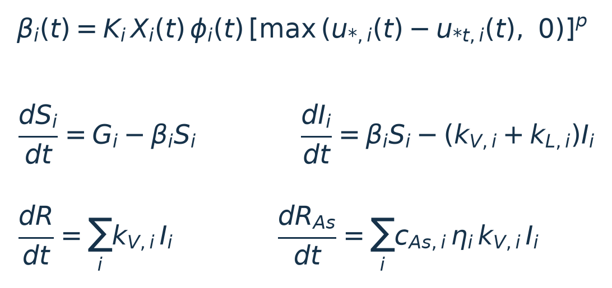

The model estimates how much PM10 dust (particles under 10 µm) and arsenic travel from exposed Great Salt Lake lakebed into the Salt Lake Valley. Its outputs are arrival mass (R and RAs, cumulative kilograms entering the valley) and arrival rate (dR/dt and dRAs/dt, kilograms per hour). As the guide specifies, it stops at arrival. It does not estimate exposure or health effects. The valley is defined as Salt Lake County minus the lakebed (a provisional choice, Appendix B). The simulation year is 2022, which includes the record-low lake of November 2022 and hourly PM10 at Wasatch Front monitors.
One standard. GSL_Dust_Model_Guide.pdf fixes the equations, the compartments (S, I, R, RAs, all in kg), the method for each component, the assumptions to test, and the build order. We followed it without substituting methods. Where data could not support a guide method, we report a data gap instead of swapping in another method. The only alternatives used are the ones the guide names: physics-based erodibility when no field labels exist, bounding η when it can't be measured, and uncertainty bounds for particle size.


Five stages, built in the guide's order: (1) 1 km grid and hourly inputs → (2) field-calibrated emissions and chemistry → (3) dispersion (ODE prototype, then HYSPLIT) → (4) held-out validation → (5) lake-level scenarios under identical weather. Uncertainty is reported separately for emission, chemistry and transport.
Ground rules that shaped the work.
| Source | What it provides | Used for | Status |
|---|---|---|---|
| USGS gauges 10010000 (Saltair, south arm) and 10010100 (near Saline, north arm) | Daily lake level, NGVD29 ft | Exposure X by arm | in use |
| USGS Great Salt Lake topobathymetric elevation model (bathymetry + 2016 lidar) | Lakebed elevation, NAVD88; read at ~16 m and analyzed at 20 m | Exposure X; basin tags | in use |
| USGS elevation–area tables (2023) | Wet area by basin, 4,175–4,215 ft | Check on Stage 1 | in use |
| NOAA HRRR, 3 km, hourly (AWS archive) | 10 m winds, rain, snow, plus full 3-D weather (winds, temperature, humidity, heights, vertical motion, boundary layer) | Emissions (u*, wetness, snow); HYSPLIT transport | in use |
| NOAA HYSPLIT v5.4.2 (Mac build) | Lagrangian dispersion and deposition model | Stage 3 transport; Stage 4 concentrations | in use |
| USGS dust and sediment data releases (2018–19 and 2022) | Sediment arsenic at 16 lakebed sites (<63 µm or bulk) | cAs by kriging | in use |
| Perry, Crosman & Hoch (2019), Great Salt Lake Dust Plume Study, Appendix G | Arsenic in resuspended PM10-size lakebed soil, 120 sites with coordinates | η measured | new |
| Same report, Appendix C | Surface survey: vegetation, crust type, visible fines at ~5,250 points | Erodibility φ (physics branch) | new |
| Van Pelt et al. (2020), Lordsburg Playa NM, PI-SWERL | PM10 threshold friction velocity and flux ranges | Threshold law, as a stand-in | interim |
| Great Salt Lake PI-SWERL flux tables (Powell, Univ. of Utah MS thesis; Perry group survey) | GSL threshold, flux vs u*, depletion | Threshold law, S(0), G, φ labels | not obtainable yet |
| EPA AQS hourly PM10, 5 Wasatch Front monitors, 2022 | Observed concentrations; 30 episodes | Stage 4 validation | in use |
| Independent plume evidence (satellite, back-trajectories) | Whether each episode is lake dust | Stage 4 attribution | not sourced yet |
Vertical datums. The gauges report NGVD29 feet and the terrain is NAVD88. We use USGS's conversion at Saltair, NAVD88 = NGVD29 + 3.476 ft, which is unit-tested. Scenario levels are gauge (NGVD29) readings, the datum the Great Salt Lake Strike Team's healthy range (4,198–4,205 ft) refers to.
The lakebed is divided into 6,250 cells of 1 km (NAD83 / UTM 12N), covering 5,781 km² up to 4,215 ft NAVD88. Each cell is tagged with its arm. Farmington and Bear River Bays take the south-arm gauge, a provisional choice. For each cell and hour, the exposed fraction X is the share of the cell's 20 m terrain pixels above that arm's water level. Because X comes from sub-cell terrain, no single average elevation stands in for the cell.
Grid-resolution test (guide assumption). Recomputing exposure at 0.5, 1 and 2 km gives identical totals and patterns: 3,466 km² exposed at the record low, 2,735 km² at 4,195 ft and 2,098 km² at 4,198 ft. That is expected, because X is built from 20 m pixels. Where resolution does matter is the HYSPLIT source zones, tested in Section 6.
Emission follows the guide's threshold law, β = K·X·φ·max(u* − u*t, 0)p, with K calibrated so a full reservoir emits the reference flux at the reference friction velocity. Friction velocity over the lakebed comes from HRRR 10 m winds through the log law with a playa roughness length z0. HRRR's own friction velocity is not used, because HRRR treats the drying lakebed as either open water or vegetated land. The threshold u*t, the exponent p and the reference flux are stand-ins from Lordsburg Playa, New Mexico (Appendix A), carried with wide ranges. This is the model's biggest weakness (Sections 9–10).
No Great Salt Lake PI-SWERL labels exist, so the guide's machine-learning branch (RF/XGBoost on field labels) is not possible. We use the guide's physics branch. φ = (surface erodible fraction) × (dry) × (no snow) × (above the capillary fringe). The surface fraction now comes from Perry et al. (2019) Appendix C. They define a hot spot as bare ground with visible fines and no crust or only an erodible shallow crust. Each cell gets the share of hot-spot points within about 5 km, shrunk toward the lakewide share where points are sparse. We parsed the PDF table by character position. Our counts match the report within 5% for vegetation, crust and visible fines, but our hot-spot count is 18% lower (366 vs 446 points). A scale factor of 1.0–1.5, central 1.23 to match the report, carries that difference.

The guide asks for independent estimates of S(0) and G, and none exist yet. Both use assumed areal values. Replenishment now accrues only on exposed lakebed (a provisional choice), not underwater. Even so, the loose-sediment reservoir grows from about 86 kt to 169 kt over 2022 while only ~4 kt is emitted. Because emission is proportional to the reservoir, it drifts upward through the year. Repeat PI-SWERL tests showing depletion would fix this.
Sediment arsenic cAs is kriged (Gaussian process on log arsenic) from 16 USGS lakebed sites, giving about 18.5 mg/kg. The data are too sparse for the kriging to resolve much spatial pattern, so the surface is nearly flat. Perry et al. (2019) Appendix G resuspended lakebed soil from 120 sites through a PM10 inlet and measured its arsenic, which gives the PM10-size match the guide asks for. Dividing that by nearby USGS sediment arsenic measures η.

Prototype first. The guide's ODE prototype (first-order transfer kV, kL, solved exactly each hour) proved the mass bookkeeping: mass closes to 10−9. It is kept for comparison.
HRRR for HYSPLIT. We wrote a converter that takes each hour of HRRR from NOAA's archive, crops it to a 450 × 450 km box around the lake on HRRR's own 3 km grid, and writes HYSPLIT's ARL format. It includes 18 pressure levels from 925 to 500 hPa and 12 surface fields. Raw downloads (~2.4 GB per day) are never saved, and only 65 MB per day is kept. Checks:
Counting first valley entry once. HYSPLIT writes every particle's position each minute, and a tracker follows each particle through HYSPLIT's internal renumbering. That rule was decoded and is re-checked every minute, and the run stops if particles stop matching up. A particle's mass, after HYSPLIT's dry and wet deposition along the way, counts toward R at its first minute inside the valley, and only then. Hourly snapshots were tested and rejected: on a windy day they missed 15% of entries.
Running HYSPLIT once, using it for everything. HYSPLIT's transport and deposition are linear in mass, so the lakebed is split into 92 source zones of 10 km. Each zone is run with a unit emission (1 kg/h) for all of 2022, and the mass entering the valley is recorded by release hour. For any emission series βS, from the central run, any ensemble member or any lake level, valley arrival is the sum of emissions × these stored arrivals. Particles are released only in the 24.7% of zone-hours windy enough for any parameter set to emit. In all other hours the threshold law gives exactly zero for every member, which we confirmed in the central run. Three particle sizes ride in each run (2.5, 5 and 10 µm), with 5 µm central, as the guide's uncertainty bounds for size.

Scale of the run. 92 four-day periods × 92 zones × 3 particle sizes, with HYSPLIT on a fixed 1-minute step. Weather for all of 2022 was streamed through a buffer of a few days. The disk never held more than ~5 GB, mostly validation-episode weather kept for reruns. Three date ranges ran side by side in about 14 hours. Afterwards, each ensemble member or scenario takes about 9 seconds, and recalibrating emissions later needs no new HYSPLIT runs.
Particle size. Over all of 2022, the central emissions give 438 t (10 µm), 447 t (5 µm) and 462 t (2.5 µm) arriving, a ±3% transport uncertainty from size. That is small next to emission uncertainty (Section 9).
| Quantity, 2022 | Value | Note |
|---|---|---|
| Mean exposed lakebed | 3,362 km² | observed lake levels |
| Mean emitting area (X·φ) | 245 km² | dry, snow-free, survey-based φ |
| PM10 dust emitted from the lakebed | 4,143 t | |
| Dust reaching the Salt Lake Valley (R) | 447 t | about 11% of emissions; ODE prototype gave 435 t |
| Arsenic reaching the valley (RAs) | 14.5 kg | about 32 mg per kg of arriving dust |
| Share arriving April–June | 82% | October 6%, September 5%, July 4% |
| Biggest single days | 57, 45, 45 t | May 3, April 5, May 20 |


The 2022 hourly weather is held fixed and only the lake level changes, applied to both arms. The change flows through exposure → emission → HYSPLIT → arrival. Each level also has a 200-member joint ensemble that varies all emission and chemistry parameters together.
| Lake level (ft, NGVD29) | Dust, HYSPLIT | Dust, ODE prototype | 5–95% (joint ensemble) | Arsenic, central | Exposed lakebed |
|---|---|---|---|---|---|
| 4,188.5 (Nov 2022 record low) | 510 t | 499 t | 2 – 12,500 t | 16.6 kg | 3,466 km² |
| 2022 as observed | 447 t | 435 t | 1.6 – 11,500 t | 14.5 kg | 3,362 km² (mean) |
| 4,192 | 395 t | 382 t | 1.2 – 10,500 t | 12.8 kg | 3,155 km² |
| 4,195 | 271 t | 236 t | 0.8 – 8,000 t | 8.8 kg | 2,736 km² |
| 4,198 (healthy range, low end) | 169 t | 135 t | 0.6 – 5,400 t | 5.5 kg | 2,100 km² |
| 4,205 (healthy range, high end) | 45 t | 18 t | 0.2 – 1,500 t | 1.5 kg | 575 km² |


Design, fixed in advance. We defined 30 PM10 episodes in 2022: an hourly reading of at least 150 µg/m³ at two or more of five Wasatch Front monitors, with readings within 6 hours merged into one episode. 10 episodes and 2 monitors were held out by a seeded random draw before any comparison. Nothing in the model is tuned to PM10, so every episode is out of sample, and the held-out split is reported as the guide specifies. For each episode, HYSPLIT ran directly with the central run's actual hourly emissions from 24 hours before the episode. We read the modeled lake-dust concentration (0–100 m layer, hourly) at each monitor.


| Subset | Event-hours | Event × monitor pairs | Hourly correlation | Pairs with modeled peak > 50 µg/m³ | Median observed peak |
|---|---|---|---|---|---|
| All episodes, all monitors | 756 | 142 | 0.06 | 0 | 171 µg/m³ |
| Held-out events | 189 | 49 | 0.07 | 0 | 157 µg/m³ |
| Held-out monitors | 307 | 58 | 0.03 | 0 | 164 µg/m³ |
| Held-out events at held-out monitors | 76 | 20 | 0.10 | 0 | 151 µg/m³ |
What the validation says. The model gets when lake dust should matter roughly right, but by itself it explains essentially none of the observed PM10 at these monitors. Two things are mixed together here, and PM10 alone cannot separate them. (1) Many episodes are not lake dust. The guide warns that PM10 cannot identify lake dust; that needs independent plume evidence per event, which we have not yet sourced. (2) On the lake-dust days, modeled emissions are very likely too low. The emission law runs on stand-in parameters whose uncertainty range spans about 6,000×. The right fix is to calibrate the emission law against Great Salt Lake field fluxes, as the guide requires, then re-run this validation unchanged. Tuning emissions until the monitors match would make the validation meaningless. Modeled arsenic has not yet been compared with independent filter or dust-trap chemistry.
| Finding | Confidence | Why |
|---|---|---|
| Raising the lake sharply reduces dust and arsenic reaching the valley, by about 11× from record low to 4,205 ft | relatively robust | Driven by terrain, measured exposure and survey erodibility. Arrival falls with lake level in all 200 ensemble members, by 8–18× from record low to 4,205 ft. |
| Lake-dust arrival is concentrated in a handful of spring and early-summer storms | relatively robust | Follows from HRRR winds and the threshold form of the law. Matches the timing of the observed storm episodes. |
| Farmington Bay and the south-east shore supply most of the dust that reaches the valley | moderately robust | Field-survey hot spots plus HYSPLIT transport. Depends on the 2016–18 survey still describing the surface. |
| Airborne lake dust carries about 1.75× the sediment's arsenic (≈ 32 mg/kg) | moderately robust | Measured at 18 site pairs. Sediment arsenic itself is sparse (16 sites). |
| About 450 t of dust and 15 kg of arsenic reached the valley in 2022 | low | Range about 2–11,500 t. Emission parameters are stand-ins, and validation suggests the true value is likely higher. |
| How much of observed valley PM10 is lake dust | not yet answerable | Needs calibrated emissions and independent plume evidence per episode. |
Bottom line. The model is now a complete, checked implementation of the guide's chain, with HYSPLIT doing the transport, and it answers relative questions (lake level, season, source area) with reasonable confidence. It should not yet be used for absolute amounts. Those wait on one dataset, Great Salt Lake PI-SWERL flux measurements. Because transport is stored per zone, plugging those in later means re-running emissions and the ensemble in minutes, with no new HYSPLIT runs.
| Parameter | Central | Range | Units | Source | Status |
|---|---|---|---|---|---|
| u*t threshold friction velocity | 0.36 | 0.24–0.56 | m/s | PI-SWERL, Lordsburg Playa NM | stand-in |
| p wind exponent | 3 | 2–4 | – | No GSL flux series | stand-in |
| flux_ref reference PM10 flux | 3×10−6 | 5.6×10−7–2.5×10−5 | kg m−2 s−1 | Lordsburg: crust to disturbed delta | stand-in |
| u*ref of the reference flux | 0.8 | 0.7–0.9 | m/s | PI-SWERL top step | stand-in |
| z0 playa roughness | 3×10−4 | 10−4–10−3 | m | Typical smooth playa | stand-in |
| S(0) initial reservoir | 0.026 | 0.005–0.1 | kg m−2 | ~1 mm loose layer, 2% PM10 | stand-in |
| G replenishment | 0.026 | 0–0.1 | kg m−2 yr−1 | Unconstrained | stand-in |
| φ survey scale | 1.23 | 1.0–1.5 | – | Perry et al. 2019, App. C | field data |
| Rain that wets the surface | 2 | 1–5 | mm | Linked to the 4% soil-moisture shut-off (GSL PI-SWERL) | stand-in |
| Surface drying time | 3 | 1–7 | days | Assumed | stand-in |
| Capillary fringe above water line | 0.3 | 0.1–0.6 | m | Assumed | stand-in |
| Snow depth cut-off | 0.01 | 0.005–0.02 | m | Assumed | in use |
| η arsenic enrichment | 1.75 | 1.0–3.6 | – | Perry App. G ÷ USGS sediment | measured |
| Particle diameter (HYSPLIT) | 5 | 2.5–10 | µm | PM10 dust; density 2.5 g/cm³ | bounds |
HYSPLIT deposition uses its resistance scheme for particles, gravitational settling for the given diameter, and HYSPLIT's suggested wet scavenging (8×10−5 in-cloud and below-cloud). Particles are released 10 m above the zone's lakebed over the zone's lakebed area, 50 per zone-hour per size, and followed for up to 24 hours. In the pilot, every valley entry happened within 6 hours.
| Choice | Current setting | Why it matters |
|---|---|---|
| Valley boundary | Salt Lake County minus the lakebed | Defines "entering the valley" for R |
| Bays' lake level | Farmington and Bear River Bays use the south-arm gauge | Exposure of the two main hot-spot areas |
| Size treatment | Uncertainty bounds (2.5 / 5 / 10 µm), not particle bins | Transport and enrichment by size; effect ±3% |
| Replenishment | Only on exposed lakebed | Reservoir growth (Section 5) |
| Valley entry height | Any height (pilot entries were all below 1,250 m above ground) | Whether dust passing high overhead counts |
| Source zones | 10 km (5 km tested: under 2 points different) | Transport resolution |
| Simulation year | 2022 | Weather; record-low lake |
| Scenario levels | 4,188.5 / 4,192 / 4,195 / 4,198 / 4,205 ft, gauge datum, both arms | Stage 5 |
| Check | Result |
|---|---|
| Wet area vs USGS elevation–area tables | Within 0.15% at all levels, by basin |
| Datum conversion | Unit-tested (NAVD88 = NGVD29 + 3.476 ft) |
| ODE mass balance | Closes to 10−9 |
| HRRR → HYSPLIT files | Read by HYSPLIT tools; positions correct at 4 sites; values physically right |
| First-entry tracking | HYSPLIT's renumbering rule decoded and checked every minute; minute resolution (hourly would miss 15%) |
| Zone shortcut vs direct HYSPLIT | Median −0.7% over 17 episodes with >1 t |
| Releasing only in windy hours | Zero emission outside them in the central run |
| Grid resolution | Exposure identical at 0.5 / 1 / 2 km; 5 vs 10 km zones within 2 points |
| Perry report parsing | Category counts within 5% of the report; hot spots 18% low (covered by φ scale) |
| Automated tests | 16 pass (datums, exposure, ODE, model chain, transfer, ARL format, superposition, empty zones) |
scripts/stage1_exposure.py: terrain, basins, exposure (needs the USGS terrain files).scripts/fetch_hrrr.py: hourly HRRR on the 1 km lattice for emissions.scripts/extract_perry_report.py: survey and PM10 arsenic tables from the Perry report PDF.scripts/run_hysplit_transfer.py: HYSPLIT unit-source runs, with HRRR streamed. It can run as several date ranges at once (--start/--end), resumes after interruption, and --check confirms completeness.scripts/run_episodes.py: Stage 4 direct runs and scores. --score-only reuses saved runs.scripts/run_model.py --ensemble 200 --transport hysplit: central run, scenarios and ensembles, about 25 minutes on 8 cores.scripts/make_report_figures.py: the figures in this report.HYSPLIT v5.4.2 is NOAA's Mac build, installed in ~/hysplit. Data, results and logs are not in git. The scripts regenerate them.